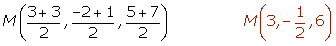

Puntos en el espacio
Coordenadas del punto medio de un segmento
Sean A (x1, y1, z1) y B (x2, y2, z2) los extremos de un segmento, el punto medio del segmento viene dado por:

Dados los puntos A(3, −2, 5) y B(3, 1, 7) , hallar las coordenadas del punto medio del segmento que determinan.

Coordenadas del baricentro de un triángulo
Sean A (x1, y1, z1), B (x2, y2, z2) y C (x3, y3, z3) los vértices de un triángulo, las coordenadas del baricentro son:
Sean A = (1, −1, 3), B = (3, 2, -2) y C = (−1, 4, 1) los vértices de un triángulo. Determinar las coordenadas del baricentro.

Puntos alineados
Tres o más puntos esán alineados si están en una misma recta, y por tanto el rango de los vectores determinados por ellos es 1.
Comprobar si los puntos A(2, 3, 1), B(5, 4, 3) y C(2, 1, 2) están alineados.
Los puntos no están alineados.
Puntos coplanarios
Dos o más vectores son coplanarios si son linealmente dependientes, y por tanto sus componentes son proporcionales y su rango es 2.
Dos o más puntos son coplanarios, si los vectores determinados por ellos también son coplanarios.
Comprobar si los puntos A(1, 2, 3), B(4, ,7, 8), C(3, 5, 5), D(−1, −2, −3) y E(2, 2, 2) son coplanarios.
Los puntos A, B, C, D y E son coplanarios si:


Los puntos A, B, C, D y E no son coplanarios.